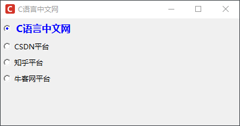
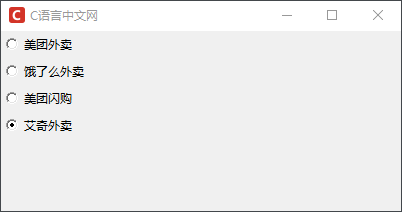
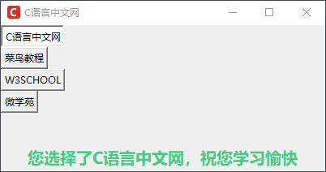
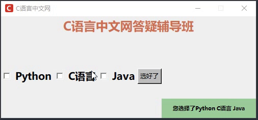
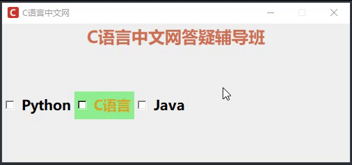

Tkinter单选框和多选框按钮
单选框按钮控件（Radiobutton），同样允许用户选择具体的选项值，不过与 Listbox 相比，单选按钮控件仅允许用户选择单一的选项值，各个选项值之间是互斥的关系，因此只有一个选项可以被用户选择。
Radiobutton 控件通常都是成组出现的，所有控件都使用相同的变量。Radiobutton 可以包含文本或图像，每一个按钮都可以与一个 Python 函数相关联。当按钮被按下时，对应的函数会被执行。这里需要注意的是，单选按钮控件仅能显示单一字体的文本，但文本可以跨越多行，除此之外，您还可以为个别的字符添加下划线。
Radiobutton 除常用的共有属性之外，还具有一些其他属性，如下表所示：
Radiobutton 控件的常用方法如下所示：
Radiobutton 控件用来解决多选一的问题，它通常是成组出现的，下面看一组简答的示例：
上述代码是比较直接的写法，虽然编码过程简单，但是从代码重构的角度来讲，它是比较冗余的，因此我们推荐下面这种写法，如下所示：
对上述代码稍作修改，当点击某一按钮时，获取选项的内容，代码如下：
复选框控件同样有许多适用场景，比如选择兴趣爱好、选择选修课，以及购买多个物品等，在这种情况下都可以使用复选框控件，其语法格式如下：
下面看一组简单的示例，创建一组复选框控件，代码如下：
复选框控件提供以下常用方法，如下表所示：
下面看一组简答的示例，如下所示：
Radiobutton 控件通常都是成组出现的，所有控件都使用相同的变量。Radiobutton 可以包含文本或图像，每一个按钮都可以与一个 Python 函数相关联。当按钮被按下时，对应的函数会被执行。这里需要注意的是，单选按钮控件仅能显示单一字体的文本，但文本可以跨越多行，除此之外，您还可以为个别的字符添加下划线。
Radiobutton 除常用的共有属性之外，还具有一些其他属性，如下表所示：
| 属性 | 说明 |
|---|---|
| activebackground | 设置当 Radiobutton 处于活动状态（通过 state 选项设置状态）的背景色，默认值由系统指定 |
| activeforeground | 设置当 Radiobutton 处于活动状态（通过 state 选项设置状态）的前景色，默认值由系统指定 |
| compound |
1. 默认值为 None，控制 Radiobutton 中文本和图像的混合模式，默认情况下，如果有指定位图或图片，则不显示文本 2. 如果该选项设置为 "center"，文本显示在图像上（文本重叠图像） 3. 设置为 "bottom"，"left"，"right" 或 "top"，那么图像显示在文本的旁边，比如如"bottom"，则显示图像在文本的下方。 |
| disabledforeground | 指定当 Radiobutton 不可用的时的前景色颜色，默认由系统指定 |
| indicatoron |
1. 该参数表示选项前面的小圆圈是否被绘制，默认为 True，即绘制； 2. 如果设置为 False，则会改变单选按钮的样式，当点击时按钮会变成 "sunken"（凹陷），再次点击变为 "raised"（凸起） |
| selectcolor | 设置当 Radiobutton 为选中状态的时候显示的图片；如果没有指定 image 选项，该选项被忽略 |
| takefocus | 如果是 True，该组件接受输入焦点，默认为 False |
| variable | 表示与 Radiobutton 控件关联的变量，注意同一组中的所有按钮的 variable 选项应该都指向同一个变量，通过将该变量与 value 选项值对比，可以判断用户选中了哪个按钮。 |
Radiobutton 控件的常用方法如下所示：
| 方法 | 说明 |
|---|---|
| deselect() | 取消该按钮的选中状态 |
| flash() | 刷新 Radiobutton 控件，该方法将重绘 Radiobutton控件若干次（即在"active" 和 "normal" 状态间切换） |
| invoke() |
1. 调用 Radiobutton 中 command 参数指定的函数，并返回函数的返回值 2. 如果 Radiobutton 控件的 state(状态) 是 "disabled" （不可用）或没有指定 command 选项，则该方法无效 |
| select() | 将 Radiobutton 控件设置为选中状态 |
Radiobutton 控件用来解决多选一的问题，它通常是成组出现的，下面看一组简答的示例：
import tkinter as tk
window = tk.Tk()
window.title("C语言中文网")
window.geometry('400x180')
window.iconbitmap('C:/Users/Administrator/Desktop/C语言中文网logo.ico')
# IntVar() 用于处理整数类型的变量
v = tk.IntVar()
# 根据单选按钮的 value 值来选择相应的选项
v.set(0)
# 使用 variable 参数来关联 IntVar() 的变量 v
tk.Radiobutton(window, text="C语言中文网", fg='blue',font=('微软雅黑','12','bold'),variable=v, value=0).pack(anchor = 'w')
tk.Radiobutton(window, text="CSDN平台", variable=v, value=2).pack(anchor = 'w')
tk.Radiobutton(window, text="知乎平台", variable=v, value=3).pack(anchor = 'w')
tk.Radiobutton(window, text="牛客网平台", variable=v, value=4).pack(anchor = 'w')
# 显示窗口
window.mainloop()
程序运行结果如下：

图1：tkinter Radiobutton控件
图1：tkinter Radiobutton控件
上述代码是比较直接的写法，虽然编码过程简单，但是从代码重构的角度来讲，它是比较冗余的，因此我们推荐下面这种写法，如下所示：
import tkinter as tk
window = tk.Tk()
window.title("C语言中文网")
window.geometry('400x180')
window.iconbitmap('C:/Users/Administrator/Desktop/C语言中文网logo.ico')
site = [('美团外卖',1),
('饿了么外卖',2),
('美团闪购',3),
('艾奇外卖',4)]
# IntVar() 用于处理整数类型的变量
v = tk.IntVar()
# 重构后的写法，也非常简单易懂
for name, num in site:
radio_button = tk.Radiobutton(window,text = name, variable = v,value =num)
radio_button.pack(anchor ='w')
# 显示窗口
window.mainloop()
程序运行结果如下：

图2：tkinter Radioburron控件
图2：tkinter Radioburron控件
对上述代码稍作修改，当点击某一按钮时，获取选项的内容，代码如下：
import tkinter as tk
def select():
dict = {1:'C语言中文网',2:'菜鸟教程',3:'W3SCHOOL',4:'微学苑'}
strings = '您选择了' + dict.get(v.get()) + '，祝您学习愉快'
lable.config(text = strings)
window = tk.Tk()
window.title("C语言中文网")
window.geometry('400x180')
window.iconbitmap('C:/Users/Administrator/Desktop/C语言中文网logo.ico')
lable = tk.Label(window,font=('微软雅黑', '15','bold'),fg='#43CD80')
lable.pack(side ='bottom')
site = [('C语言中文网',1),
('菜鸟教程',2),
('W3SCHOOL',3),
('微学苑',4)]
# IntVar() 用于处理整数类型的变量
v = tk.IntVar()
for name, num in site:
radio_button = tk.Radiobutton(window,text = name, variable = v,value =num,command = select,indicatoron = False)
radio_button.pack(anchor ='w')
# 显示窗口
window.mainloop()
程序运行结果如下：

图3：单选按钮控件
图3：单选按钮控件
Checkbutton复选框控件
Checkbutton 控件是一种供用户选择相应条目的按钮控件，但与 Radiobutton 不同的是，Checkbutton 控件不仅允许用户选择一项，还允许用户同时选择多项，各个选项之间属于并列的关系。复选框控件同样有许多适用场景，比如选择兴趣爱好、选择选修课，以及购买多个物品等，在这种情况下都可以使用复选框控件，其语法格式如下：
Checkbutton(master=None, **options)复选框控件，除了具有常用的共有属性之外，还具有一些其他重要属性和常用方法，下面对它们做简单地介绍：
| 属性 | 说明 |
|---|---|
| text | 显示的文本，使用 "\n" 来对文本进行换行。 |
| variable |
1. 和复选框按钮关联的变量，该变量值会随着用户选择行为来改变（选或不选），即在 onvalue 和 offvalue 设置值之间切换，这些操作由系统自动完成 2. 在默认情况下，variable 选项设置为 1 表示选中状态，反之则为 0，表示不选中。 |
| onvalue | 通过设置 onvalue 的值来自定义选中状态的值。 |
| offvalue | 通过设置 offvalue 的值来自定义未选中状态的值。 |
| indicatoron | 默认为 True，表示是否绘制用来选择的选项的小方块，当设置为 False 时，会改变原有按钮的样式，与单选按钮相同 |
| selectcolor | 选择框的颜色（即小方块的颜色），默认由系统指定 |
| selectimage | 设置当 Checkbutton 为选中状态的时候显示的图片，若如果没有指定 image 选项，该选项被忽略 |
| textvariable | Checkbutton 显示 Tkinter 变量（通常是一个 StringVar 变量）的内容，如果变量被修改，Checkbutton 的文本会自动更新 |
| wraplength | 表示复选框文本应该被分成多少行，该选项指定每行的长度，单位是屏幕单元，默认值为 0 |
下面看一组简单的示例，创建一组复选框控件，代码如下：
from tkinter import *
win = Tk()
win.title("C语言中文网")
win.geometry('500x200')
win.resizable(0,0)
lb = Label(text='C语言中文网答疑辅导班',font=('微软雅黑', 18,'bold'),fg='#CD7054')
lb.pack()
win.iconbitmap('C:/Users/Administrator/Desktop/C语言中文网logo.ico')
# 新建整型变量
CheckVar1 = IntVar()
CheckVar2 = IntVar()
CheckVar3 = IntVar()
# 设置三个复选框控件，使用variable参数来接收变量
check1 = Checkbutton(win, text="Python",font=('微软雅黑', 15,'bold'),variable = CheckVar1,onvalue=1,offvalue=0)
check2 = Checkbutton(win, text="C语言",font=('微软雅黑', 15,'bold'),variable = CheckVar2,onvalue=1,offvalue=0)
check3 = Checkbutton(win, text="Java",font=('微软雅黑', 15,'bold'),variable = CheckVar3,onvalue=1,offvalue=0)
# 选择第一个为默认选项
# check1.select ()
check1.pack (side = LEFT)
check2.pack (side = LEFT)
check3.pack (side = LEFT)
# 定义执行函数
def study():
# 没有选择任何项目的情况下
if (CheckVar1.get() == 0 and CheckVar2.get() == 0 and CheckVar3.get() == 0):
s = '您还没选择任语言'
else:
s1 = "Python" if CheckVar1.get() == 1 else ""
s2 = "C语言" if CheckVar2.get() == 1 else ""
s3 = "Java" if CheckVar3.get() == 1 else ""
s = "您选择了%s %s %s" % (s1, s2, s3)
#设置标签lb2的字体
lb2.config(text=s)
btn = Button(win,text="选好了",bg='#BEBEBE',command=study)
btn.pack(side = LEFT)
# 该标签，用来显示选择的文本
lb2 = Label(win,text='',bg ='#9BCD9B',font=('微软雅黑', 11,'bold'),width = 5,height=2)
lb2.pack(side = BOTTOM, fill = X)
# 显示窗口
win.mainloop()
程序运行结果如下：

图4：复选框控件
图4：复选框控件
复选框控件提供以下常用方法，如下表所示：
| 方法 | 属性 |
|---|---|
| desellect() | 取消 Checkbutton 组件的选中状态，也就是设置 variable 为 offvalue |
| flash() | 刷新 Checkbutton 组件，对其进行重绘操作，即将前景色与背景色互换从而产生闪烁的效果。 |
| invoke() |
1. 调用 Checkbutton 中 command 选项指定的函数或方法，并返回函数的返回值 2. 如果 Checkbutton 的state(状态)"disabled"是 （不可用）或没有指定 command 选项，则该方法无效 |
| select() | 将 Checkbutton 组件设置为选中状态，也就是设置 variable 为 onvalue |
| toggle() | 改变复选框的状态，如果复选框现在状态是 on，就改成 off，反之亦然 |
下面看一组简答的示例，如下所示：
from tkinter import *
win = Tk()
win.title("C语言中文网")
win.geometry('500x200')
win.resizable(0,0)
lb = Label(text='C语言中文网答疑辅导班',font=('微软雅黑', 18,'bold'),fg='#CD7054')
lb.pack()
win.iconbitmap('C:/Users/Administrator/Desktop/C语言中文网logo.ico')
# 设置三个复选框控件，
check1 = Checkbutton(win, text="Python",font=('微软雅黑', 15,'bold'),onvalue=1,offvalue=0)
check2 = Checkbutton(win, text="C语言",font=('微软雅黑', 15,'bold'),onvalue=1,offvalue=0)
check3 = Checkbutton(win, text="Java",font=('微软雅黑', 15,'bold'),onvalue=1,offvalue=0)
# 将第一个 复选框按钮的 variable值，设置为 onvalue =1 ，表示选中状态
check1.select ()
# 取消了第一个复选框的选中状态
check1.toggle()
check1.pack (side = LEFT)
check2.pack (side = LEFT)
check3.pack (side = LEFT)
# 显示窗口
win.mainloop()
程序运行结果如下：

图5：tkinter复选框控件
图5：tkinter复选框控件
关注公众号「站长严长生」，在手机上阅读所有教程，随时随地都能学习。内含一款搜索神器，免费下载全网书籍和视频。

微信扫码关注公众号